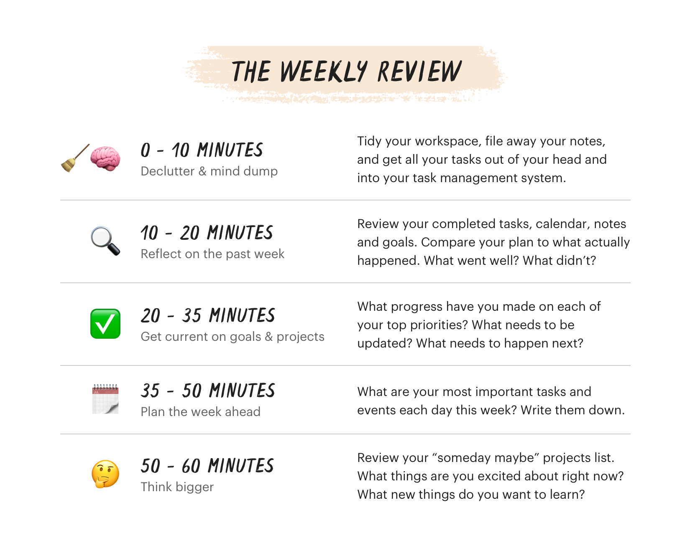

Weekly Review
Table of Contents

Reflect what went well and what didn't.
1. Principles
- Get Clear: Process all your loose-ends.
- Get Current: Make sure all your items are up to date.
- Get Creative: Come up with new ideas to improve how you live and work.
2. Checklist
2.1. Declutter
- Remove garbage and recycling
- Refile Inbox
- Archive tasks have done two weeks ago
- Get to
Inbox Zero- for email, text messages, etc - Clear browse tabs
- File away documents on download
2.2. Reflect
- Review completed tasks for the past week
- Review calendar items and meetings from the past week
- Review my intended weekly todo list vs what I actually completed
- Review and organize notes I've made over the last few days (git diff)
2.3. Check goals and projects
- Check any weekly goals I made to see if they were accomplished
- Check my monthly and annual goals to see if my actions this week are helping me reach them
- Review a list of my areas of responsibility to make sure I'm giving adequate attention to each
- Check the progress of my large projects to ensure they're on track
- Revise project items if I've fallen behind schedule or circumstances have changed
- Check my "key metrics" (e.g., lines of code written, words written, articles read, etc.)
2.4. Plan ahead
- Plan out tasks for the coming week
- Set objectives or goals for the week ahead
2.5. Map my future
- Review my "later" or "maybe" projects e.g., movies, books, career prospects
- Generate new projects or plans based on what I found exciting this week
3. Develop a set of questions
- How do I feel I did this week overall?
- What enabled me to reach my goals this week?
- Has anything stopped me from reaching my goals this week?
- Which actions did I take this week that will propel me towards my long-term goals?
- How can I improve for next week?
- What can I do next week that will set me up for my long-term goals?
- What should I plan for in the next month? Year? 5 Years?